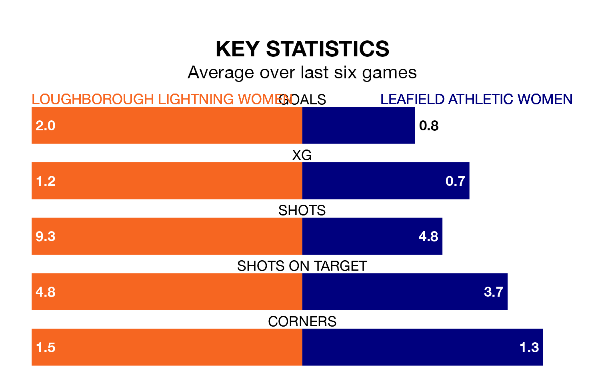

Mid-season relegation candidates Leafield Athletic Women face a challenge away against high-flying Loughborough Lightning Women on Sunday.
Leafield Athletic Women are rooted to the bottom of the Women's National League Division One – Midlands table, and have picked up just one win and four draws in their 15 games to date.
Loughborough Lightning, meanwhile, are top of the standings with 35 points, having won 11 and drawn two of their first 14 matches.
With 14 goals in 15 games so far this season, Leafield Athletic are the league's third-lowest scorers with 0.9 goals per game. And they are conceding more than average, letting in 38 goals at a rate of 2.5 per game.
Loughborough Lightning, meanwhile, are above average scorers, with 2.6 goals per game, compared to a league average of 1.8. They have conceded 0.9 goals per game.
The home team are in reasonable form in the Women's National League Division One Midlands, with three wins and two draws from their last six games.
With no wins and two draws over that period, the visitors' form is much worse – they have taken two points from 18, compared to Loughborough Lightning's 11.
Loughborough Lightning's last match was on February 11, a 3-1 win against Sporting Khalsa Women.
Leafield Athletic drew 2-2 with Sutton Coldfield Town Women last time out, on February 20.
Updated: 09:34 (UTC), 08/03/24